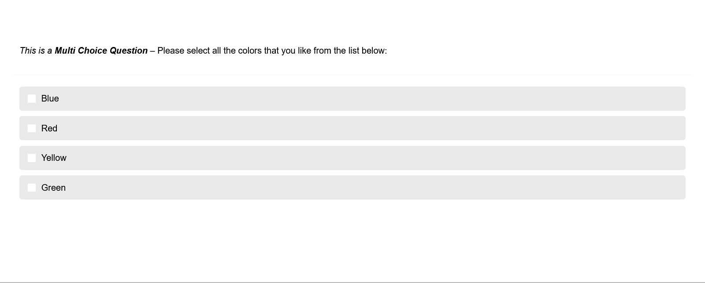
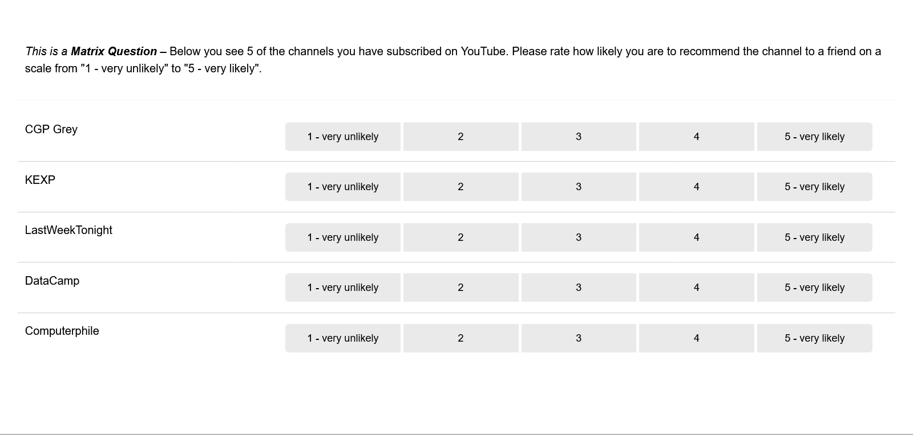
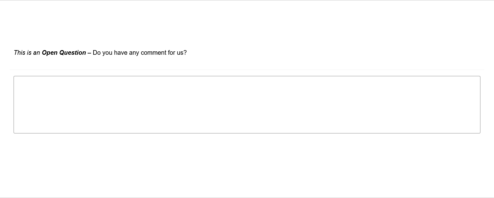

Questionnaire Configuration
This page explains the settings related to the configuration of the questionnaire and its questions. As shown before, the following question types are implemented:
-
Single Choice Question:
-
Multi Choice Question
 -
Matrix Question
 -
Semantic Differential
-
Open Question
 -
Text Block (plain text, without any response options for the participant)
Depending on the question type, different configuration options are available.
General Settings
The following configuration settings are available for all question types:
- Name
-
A question name. This name is only used for internal organisation and is not visible to participants.
- Blueprint
-
A question can either be general or related to a Blueprint.
General questions are displayed to all participants, regardless if they successfully donated any data.
Questions related to a Blueprint are only displayed to those participants that successfully uploaded some data to the related file blueprint. This means that if no donated data were extracted by the related Blueprint (either because the extraction failed, was not attempted or all entries were filtered out by the extraction rules), the question will not be displayed.Consult the section on integrating donated data in the questionnaire for more information.
- Page
-
Number of the page on which the question will be displayed.
- Index
-
Order in which questions on the same page will be displayed.
- Variable Name
-
The variable name associated to a question. This name will be included in the data export. For items belonging to a question, the variable name will be constructed as follows: "question_variable_name-{item-value}".
- Text
-
The question text that is displayed to participants.
- Required
-
If a question is marked as required, the application will show a hint to the participant if they forgot to answer this question. This hint will only be shown once. This means that if a participant chooses to ignore the hint and clicks on 'continue', they are able to skip a required question.
- Randomize items
-
Enable or disable randomization of all items.
Specific Settings
Open Question
- Input type
-
Define whether to apply restrictions for the input to this field. Can be 'text' to allow any kind of text, 'number' to only allow numerical characters, or 'email' to only allow valid email addresses. Default is 'text'.
- Maximum input length
-
Restricts the input to a certain number of characters. If this option is left empty, no input length restriction is enforced.
- Display
-
Define whether to show a 'small' one-line input field or a larger multi-line text-box. Defaults to "small" and only applies when the chosen input type is "Text".
|
The |
Question Items
For Single Choice Questions, Multiple Choice Questions, Matrix Questions and Semantic Differentials, participants answer in relation to question items. To configure question items, the following settings are available:
- Index
-
Defines the order in which the items are displayed.
- Label
-
The label/text of the item that is displayed to participants related to an item. For semantic differential questions, this is the label displayed on the left-hand side of the scale.
- Label Right
-
Only for semantic differential questions. The label displayed on the right-hand side of the scale.
- Value
-
Is (a) the identifier of an item and (b) used to indicate which item(s) has or have been selected in the data export (only for Single and Multi Choice Questions).
- Randomize
-
Instead of randomizing the order of all items with the randomize setting on the question level, this setting allows randomizing only certain items while those for which this option is not ticked stay in their place (i.e., according to their index).
- Delete
-
Tick this box if the item should be deleted. The item will be deleted as soon as you click on Update Items.
Scale Configuration
For Matrix Questions and Semantic Differentials, participants give their answers (or in other words: rate the question items) with the configured question scale.
- Index
-
Defines the order in which the items are displayed.
- Label
-
The label/text that is displayed to participants associated to the scale point.
- Value
-
Used to indicate which scale point has been selected in the data export.
- Add border
-
Setting currently has no effect - Still need to be implemented.
- Delete
-
Tick this box if the scale point should be deleted. The scale point will be deleted as soon as you click on Update Scale Points.